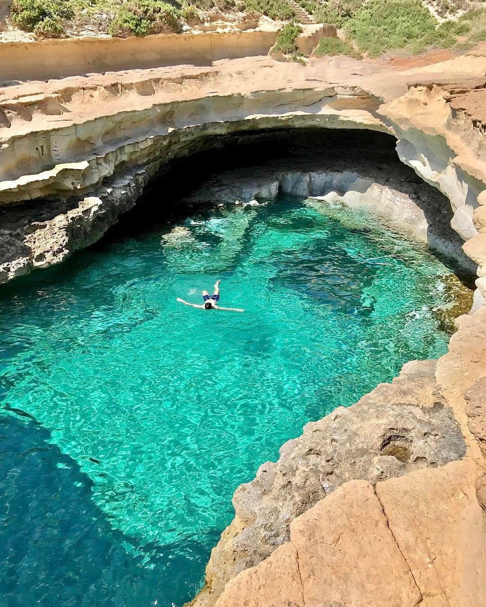

Itinerario 2 - Spiagge Iconiche e Vita Locale
Tutte le spiagge che desideri, ma in un ritmo più rilassato e con tante tappe nei borghi maltesi come Marsaxlokk e Mellieħa. C'è spazio anche per escursioni classiche come la Blue Lagoon e per godersi la cucina locale con calma.
Ideale per: chi vuole un mix tra spiagge famose e giornate più “slow”, immerso nella vita quotidiana dell'isola.

Giorno 1: Lunedì 8 Settembre - Arrivo e Relax Serale
- Sera: Arrivo all'aeroporto di Malta alle 19:45. Dopo il trasferimento e il check-in in appartamento (prevedendo di arrivare intorno alle 22:00/23:00), dedica la serata al relax. Si può optare per una cena veloce in un ristorante vicino all'appartamento o semplicemente rilassarsi dopo il viaggio. Data l'ora tarda, non sono previste attività turistiche significative.
Giorno 2: Martedì 9 Settembre - Giornata soft a Sliema
- Mattina: Colazione in tranquillità, spesa e pranzo.
- Pomeriggio: Dopo pranzo relax nelle spiagge di Sliema.
- Sera: Rientro in appartamento. Si può considerare una cena in un ristorante di Sliema con vista sulla Valletta illuminata.


Giorno 3: Mercoledì 10 Settembre - St. Peter's Pool + Il-Kalanka
- Mattina: Transfer per St. Peter's Pool, come prima tappa.
- Pomeriggio: Il-Kalanka Bay, più tranquilla
- Sera: Rientro a Sliema e cena.
Giorno 4: Giovedì 11 Settembre - Escursione a Gozo e la Laguna Blu (Comino)
- Giornata intera: Questa è la giornata dedicata all'escursione completa. Si può raggiungere Cirkewwa (punta nord di Malta) in autobus e prendere il traghetto per Gozo. A Gozo, si suggerisce di visitare la Cittadella di Victoria per ammirare i panorami a 360 gradi sull'isola e la sua storia. Si può poi scegliere di visitare una baia pittoresca come Xlendi Bay o Marsalforn Bay per un tuffo veloce. Per la Blue Lagoon, si può prendere una barca da Mgarr (Gozo) o da Cirkewwa (Malta). Si raccomanda di partire presto al mattino per godere delle acque cristalline prima che l'affluenza diventi eccessiva.
- Consiglio extra: Per un'esperienza più autentica a Gozo, noleggia uno scooter o un quad per esplorare l'isola a tuo piacimento, visitando anche luoghi meno battuti come le saline di Xwejni o la Basilica di Ta' Pinu.
- Sera: Rientro a Sliema, cena e uscita.
Giorno 5: Venerdì 12 Settembre - Imġiebaħ Bay
- Mattina: Trasferimento a nord verso Imġiebaħ Bay
- Pomeriggio: Pranzo al sacco e verso sera ritorno a Sliema
- Sera: Cena e uscita.
Giorno 6: Sabato 13 Settembre - Gnejna & Qarraba Bay
- Mattina: Partenza presto per Gnejna Bay.
- Pomeriggio: Trekking verso Qarraba Bay
- Sera: Ultima cena speciale a Sliema o nella vicina St. Julian's.


Giorno 7: Sabato 14 Settembre - Mattinata Libera e Partenza
- Mattina: Tempo libero per gli ultimi acquisti di souvenir a Sliema, una passeggiata rilassante sul lungomare, o un caffè finale.
- Pomeriggio: Trasferimento all'aeroporto per il volo di rientro previsto per le 19:50. Considera di partire dall'alloggio almeno 3 ore prima del volo per avere tempo sufficiente per il check-in e i controlli di sicurezza.